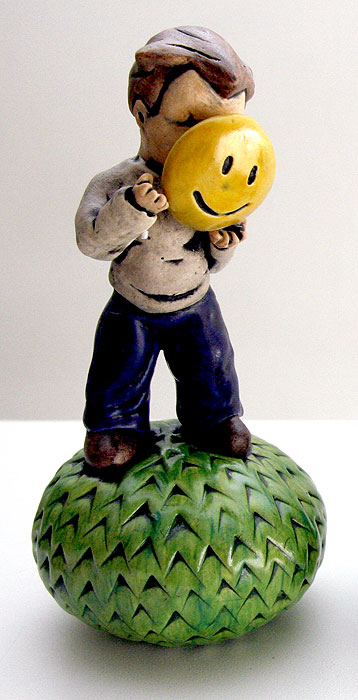
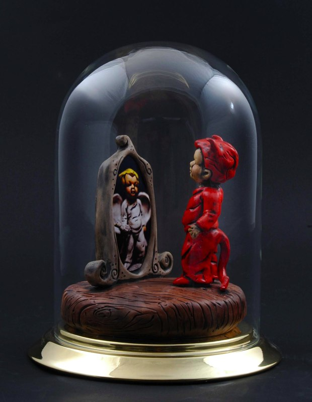
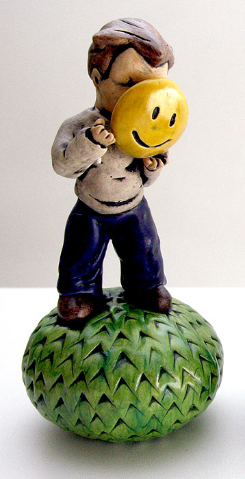
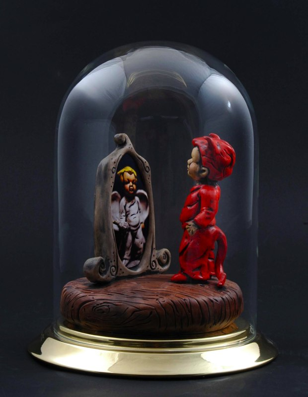
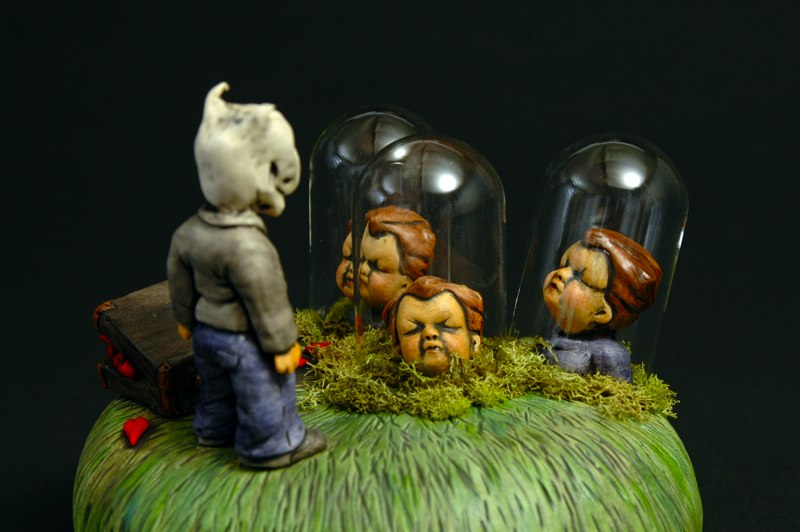
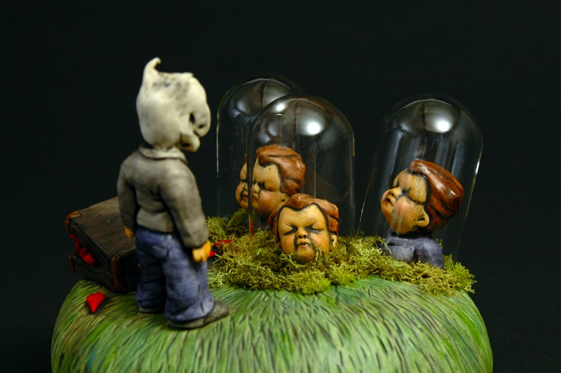

These are just a few of Carol's "collectible figurines". Usually of a disturbing or ironic nature, where a childlike state is given to modern terror, degradation, and perverse technology.
  
 
From left to right, When He Grew Up He'd Fight Like His Father 2007. Those Pills Would Help Him Put On A Happy Face. It Was What He Didn�t See On The Inside That Really Mattered.

 

From left to right, Not only were they lying to everyone, they were lying to themselves. He preferred sterile plastic to love. Never believe someone over the age of thirty.